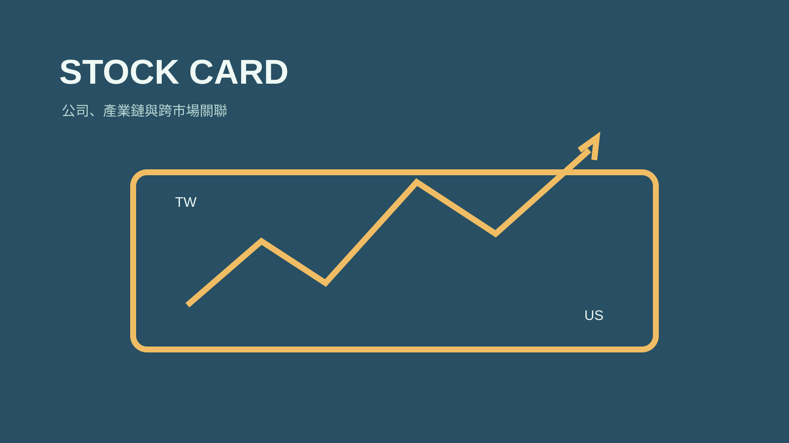

技能包 · 學習工具 · 量化投資
股票資訊卡
2026.08 · 個人專案

FIG. 28 — 產品主畫面
關於這個作品
股票資訊卡將公司業務、產業鏈位置、上下游與跨市場關聯整理成標準化卡片。它支援單張、批次與增量更新，幫助投資研究從一時的查詢，累積成可比較、可連結的公司知識庫。
作品亮點
整理公司業務、產品與產業鏈定位
建立上下游與台美股跨市場關聯
支援單張、批次與增量更新模式
將研究結果寫入可檢索的本地股票卡資料庫